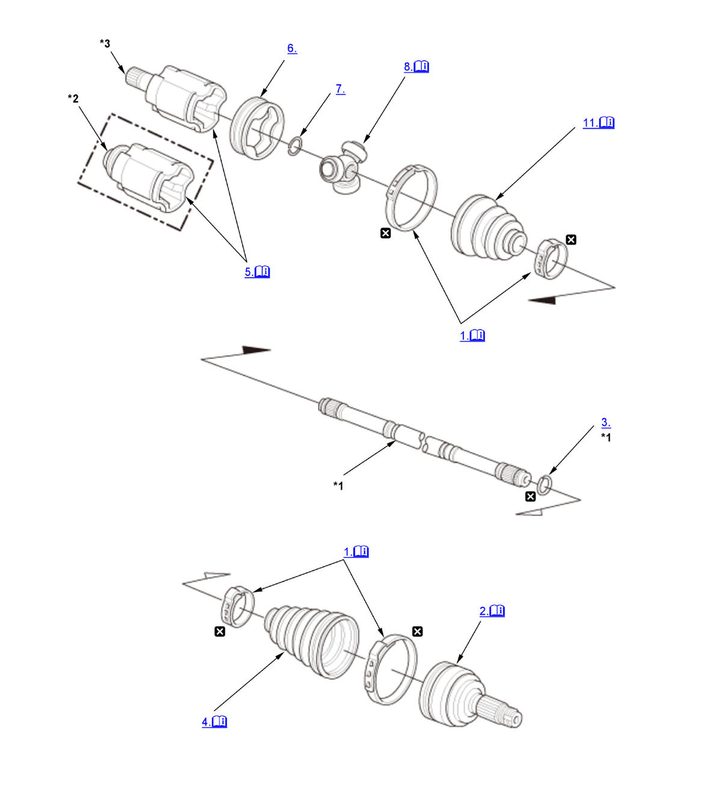
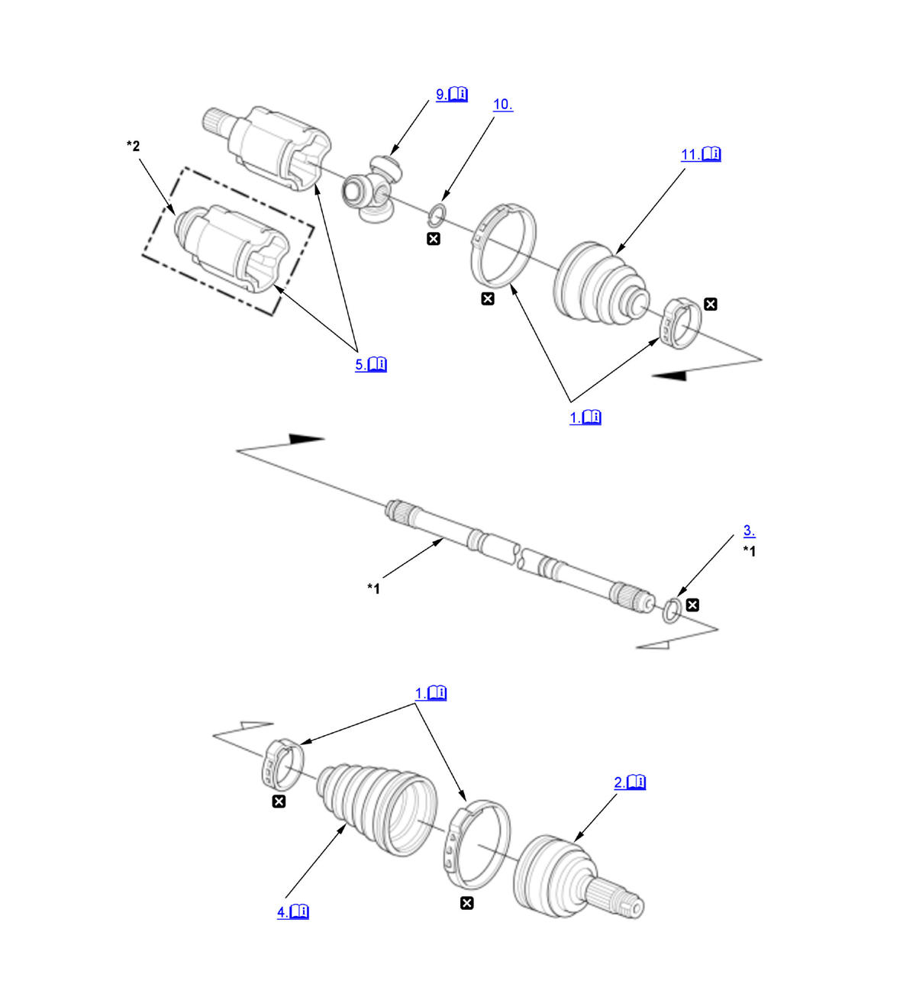

Front Driveshaft Disassembly and Reassembly (Except K20C1): Disassembly: Procedure
Numbered call-outs in figure pertain to list numbers in following procedure.

Courtesy of HONDA, U.S.A., INC. |
Detailed information, notes, and precautions |
 |
Replace |
| *1 | These parts have inspection items. |
| *2 | Right driveshaft (With intermediate shaft) |
| *3 | Left driveshaft and Right driveshaft (Without intermediate shaft) |
Numbered call-outs in figure pertain to list numbers in following procedure.

Courtesy of HONDA, U.S.A., INC. |
Detailed information, notes, and precautions |
|
Replace |
| *1 | These parts have inspection items. |
| *2 | Right driveshaft |
- Boot Band - Remove
Ear Clamp Type
Low Profile Type 1
Low Profile Type 2
- Outboard Joint - Remove
1. Slide the outboard boot (A) partially toward the inboard joint side. 2. Wipe off the grease to expose the driveshaft and the outboard joint inner race.
3. Make a mark (A) on the driveshaft (B) at the same level as the outboard joint end (C). 4. Securely clamp the driveshaft in a bench vise with a shop towel wrapped around the driveshaft. 5. Remove the outboard joint (A) using the 24 x 1.5 mm threaded adapter (24 mm spindle nut), 22 x 1.5 mm threaded adapter (22 mm spindle nut) and a commercially available 5/8"-18 UNF slide hammer (B).
NOTE: Check inside of the outboard joint and on the serrations for wear and tear.
6. Remove the driveshaft from the bench vise.
- Stop Ring - Remove
- Outboard Boot - Remove
NOTE:
- Check the outboard boot (A) for cracks and damage. If any damage is found, replace the boot.
- Wrap the splines on the driveshaft (B) with vinyl tape (C) to prevent damaging the outboard boot.
- Inboard Joint - Remove
1. Make marks (A) on each roller (B) and the inboard joint (C) to identify the locations of the rollers to the grooves in the inboard joint. NOTE: Do not engrave or scribe any marks on the rolling surface.
2. Remove the inboard joint on a clean shop towel (D). Be careful not to drop the rollers when separating them from the inboard joint.
NOTE: Check inside of the inboard joint and on the serrations for wear and tear.
- Inboard Boot Adapter - Remove (Driveshaft Type 1)
- Circlip - Remove (Driveshaft Type 1)
- Spider - Remove (Driveshaft Type 1)
1. Make marks (A) on the spider (B) and the driveshaft (C) to identify the position of the spider on the shaft. 2. Remove the spider.
NOTE: If necessary, use a commercially available bearing puller while being careful not to damage the spider.
- Spider - Remove (Driveshaft Type 2)
1. Make a mark (A) on the driveshaft (B) at the same level as the spider end. 2. Make marks (C) on the spider (D) and the driveshaft to identify the position of the spider on the shaft.
3. Support the roller of the spider (A) seated on wood blocks (B) on a bench vise (C). 4. Remove the driveshaft (D) from the spider using the 20 mm pilot and the 15 x 135L driver handle.
NOTE:
- Be careful not to damage the rollers.
- Do not directly hit the driveshaft with the hammer.
- Stop Ring - Remove (Driveshaft Type 2)
- Inboard Boot - Remove
NOTE:
- Check the inboard boot (A) for cracks and damage. If any damage is found, replace the boot.
- Wrap the splines on the driveshaft (B) with vinyl tape (C) to prevent damaging the inboard boot.